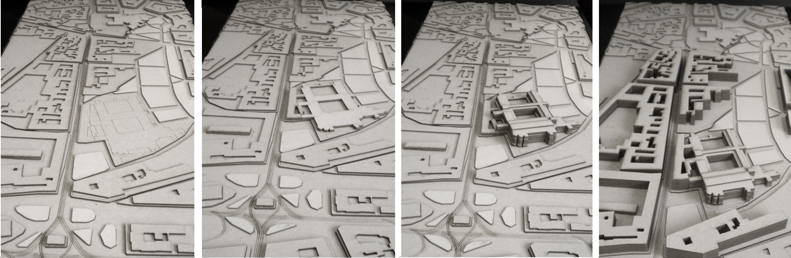
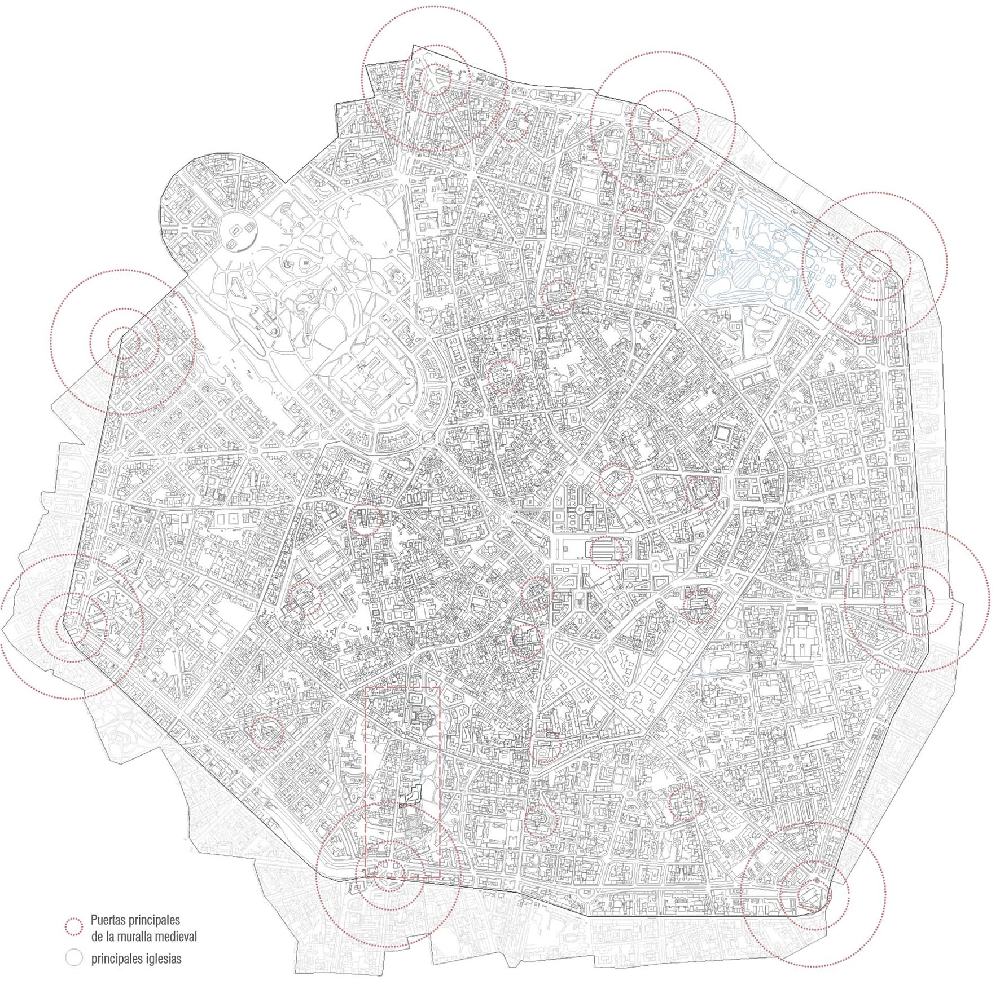
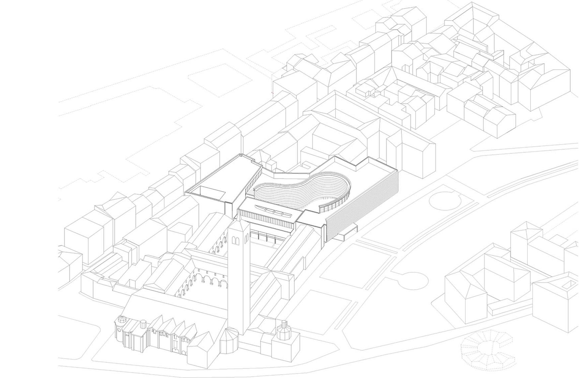
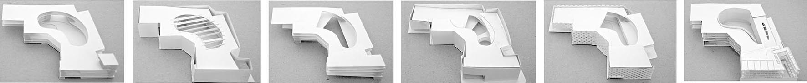
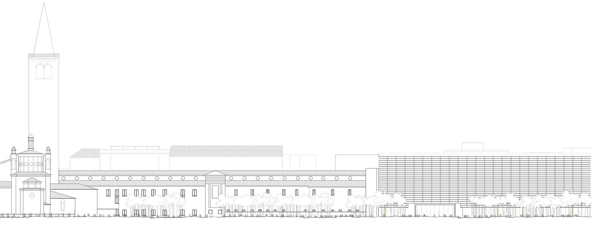
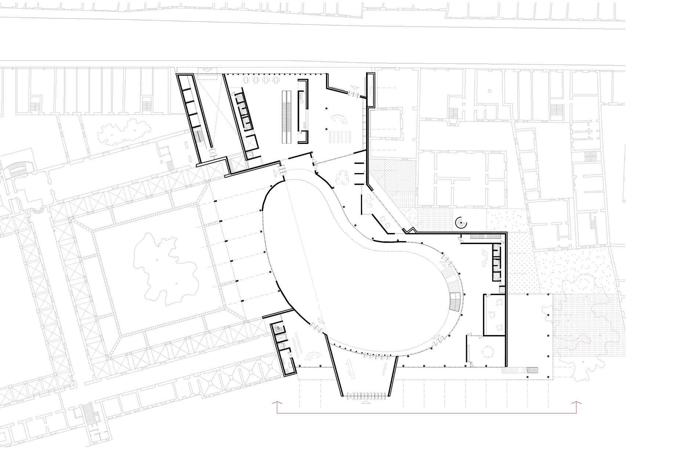
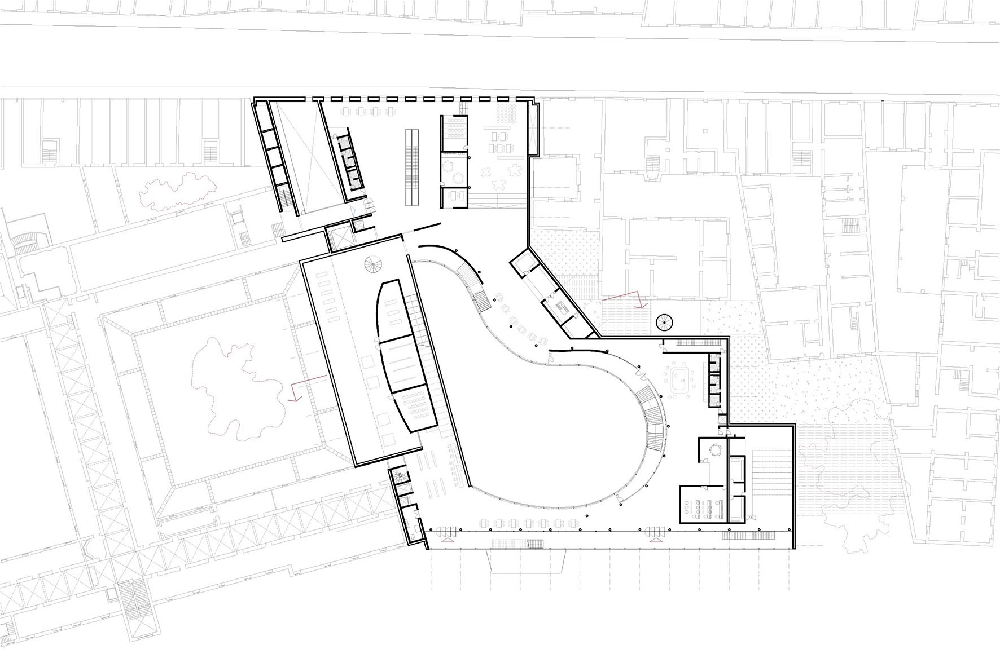
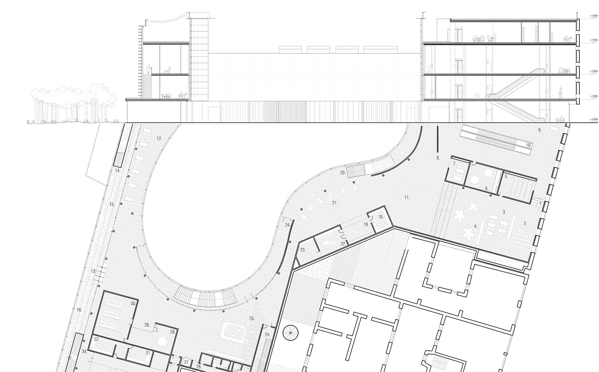
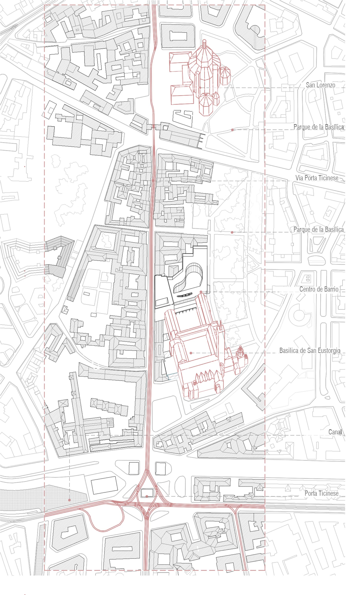
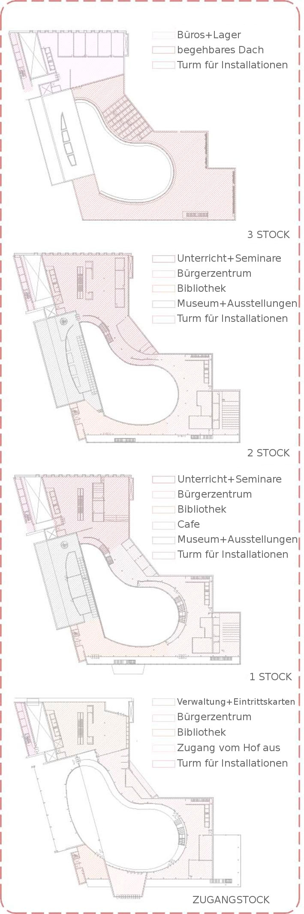

-

Umgebungsmodell

Mailand Altstadt

Projekt Axonometrie

Entwurfsentwicklungsmodell

Hauptfassade zum Park

Zugangstockwerk

OG_1

Querschnitt durch Innenhof
Das Projekt ist im Süden von Mailand im Stadtviertel Porta Ticinese angesiedelt. Kennzeichen des urbanen Kontextes ist die gotische Grundstruktur, wobei zwei Bauwerke eine besonders herausragende Rolle spielen: die Sankt-Lorenz-Kirche mit ihrer zentralen und vertikalen Anordnung und die Basilika St. Eustorgio mit ihrem doppelten Kreuzgang, der zwar teilweise zerstört ist, aber noch in gewissem Grad seine Unabhängigkeit von der Umgebung bewahrt.
Der Vorschlag beschäftigt sich mit der urbanen Verzahnung der einzelnen Elemente, aus denen dieser Bereich besteht:
1.- Kreuzgang von St. Eustorgio.
2.- Park Delle Basiliche (der drittgrößte Park Mailands).
3.- Corso di Porta Ticinese.
Die Basilika bekommt ihre zerstörte Begrenzung zurück, es wird eine Lösung für den Kontakt zum Park und zu den rückseitigen Trennmauern der angrenzenden Gebäude geboten, und der Straße wird eine vorher nicht vorhandene Kontinuität verliehen, indem eine durch das Gebäude verlaufende Verbindung zwischen Straße und Park geschaffen wird.
Das Gebäude hat einen eher geometrischen und starren Umriss, der durch den Kontakt mit den genannten Elementen bedingt ist und dafür Lösungen bietet, und öffnet sich nach innen, sodass ein großer zentraler Hof mit mehr Freiraum entsteht, der organischer wirkt. Dieser Hof setzt sich im Rhythmus der Höfe der Basilika fort und ist sowohl physisch als auch visuell mit einem von ihnen verbunden.
